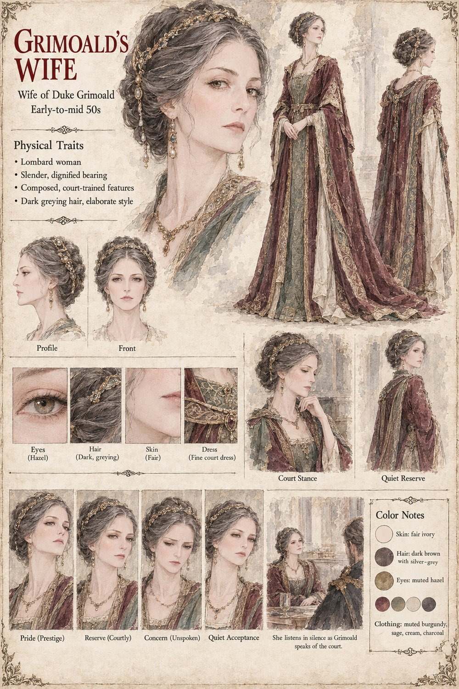

Grimoald's Wife
Wife of Duke Grimoald · early-to-mid 50s
Duke Grimoald's wife, slender and dignified, composed by the same court training that shaped every feature of her bearing. She listens in silence as Grimoald speaks of the war his workshops have made possible, one of the very few people close enough to him to have noticed the personal workshop he never lets anyone touch — and, like everyone else in his life, never once told why.
Appears in The Third Grain